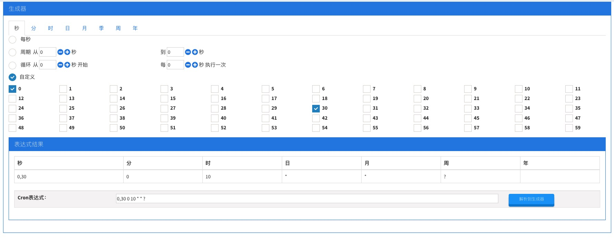

背景
在日常开发工作中，在服务器上运行的每个任务的运行结果及详情，是我们需要关心的，在数据仓库的建设开发中，我们需要更早更准确的知道数据同步、仓库建设等任务是否成功，及结果是否符合预期，特别是在任务发生异常的时候可以更快的定位分析和解决，以保证提供给下游和业务人员的数据是准确的。
现行的监控和告警系统中，主要依托于大数据生态圈中组件自身携带的功能，使得需要定制化服务的项目无法使用，需要单独进行开发，在数据仓库方向。目前主要依托于人工去检查任务是否成功，或是业务人员的反馈进行查验，主要的痛点在于不能够及时的发现异常甚至于一些较少人使用的数据不能发现异常，同时日常的手工检验工作耗费了大量的人力和精力。
因此，经过调研，从互联网公司的一些需求及各位开发人员的使用经验出发，结合公司实际设计开发了现在的检测监控系统：hive-monitor。
整体设计
hive-monitor系统开发语言选用Java和Kotlin，框架选用有Spring、SpringBoot、MyBatis、Vue、Quartz等。系统通过Vue+HTML的前端页面进行任务的添加、删除及任务调度的配置、执行和删除，同时对任务执行结果的展示和筛选，选用Quartz依赖其本身对任务调度的动态配置，后端服务通过Spring和MyBatis实现对任务的动态配置。任务在执行时会查询任务需要校验的字符串表达式，同时通过提供的prestoServer、hiveServer、hdfsServer接口对表达式中的每个元素进行赋值，将赋值后的表达式通过grovy脚本语言进行执行，判断其真假，最终将执行的结果通过已经实现的邮件发送和企业微信接口分别发送给需要提醒的人员。下面是系统的架构图：

具体实现
1. 前端实现
hive-monitor是基于docker web vue搭建的前端页面，设计在页面上可以对检测的Job进行配置修改执行等操作，同时在页面中能查看执行的检查结果，根据需要提供相应的搜索功能和cron表达式生成页面。下面是现有的页面截图：


2. 后端实现
在后端使用的技术框架有SpringBoot、MyBatis、Quartz，开发语言主要为Java+Kotlin，在Controller统一接收和响应前端的请求，然后调用Service层处理请求，在DAO层通过Aop实现多数据源的配置，现配有数据源有mysql、presto、hive-jdbc三个，主要的配置项如下：
# mysql
mysql.name1.driver-class-name=com.mysql.jdbc.Driver
mysql.name1.url=jdbc:mysql://host:port/database?useUnicode=true&characterEncoding=UTF-8
# presto
presto.name2.url=jdbc:presto://host:port/hive/online
presto.name2.driverClassName=com.facebook.presto.jdbc.PrestoDriver
# hive-jdbc
hive.name3.url=jdbc:hive2://host:port/
hive.name3.driverClassName=org.apache.hive.jdbc.HiveDriver在Service的实现类中，通过传入的jobID查询需要执行的job及关联信息，根据任务的配置信息进行表达式赋值查询并对表达式验真，将验证结果及表达式信息记录和持久化。
3. 调度实现
Hive-monitor的调度采用quartz进行实行，在Controller中接收前端传递的Job配置信息，根据Cron表达式生成相应的Job，存放至quartz对应的表中。下面是添加job的部分代码：
fun modifyJob(quartz: QuartzEntity): Boolean {
logger.info(null, "modifyJob", "新增任务 $quartz")
try {
//获取Scheduler实例、废弃、使用自动注入的scheduler、否则spring的service将无法注入
//Scheduler scheduler = StdSchedulerFactory.getDefaultScheduler();
//如果是修改 删除旧的 任务
if (quartz.oldJobGroup != null) {
val key = JobKey(Objects.requireNonNull<String>(quartz.oldJobName), quartz.oldJobGroup)
scheduler.deleteJob(key)
}
val cls = Class.forName(quartz.jobClassName)
cls.newInstance()
//构建job信息
val job = JobBuilder.newJob(cls).withIdentity(Objects.requireNonNull<String>(quartz.jobName),
quartz.jobGroup)
.withDescription(quartz.description).build()
// 解析job参数
val ids = quartz.taskIDs ?: return Result.error(500, "任务ID列表为空！")
val list = monitorService.queryJob(ids, "")
if (ids.split(",".toRegex()).dropLastWhile { it.isEmpty() }.toTypedArray().size != list.size) {
logger.warn(null, "modifyJob", "任务ID列表中存在id未在t_monitor_job中配置")
}
//出发时间点
job.jobDataMap["jobID"] = quartz.taskIDs
val cronScheduleBuilder = CronScheduleBuilder.cronSchedule(Objects.requireNonNull<String>(quartz.cronExpression))
val trigger = TriggerBuilder.newTrigger().withIdentity("trigger" + quartz.jobName!!, quartz.jobGroup)
.startNow().withSchedule(cronScheduleBuilder).build()
//交由Scheduler安排触发
scheduler.scheduleJob(job, trigger)
} catch (e: Exception) {
logger.error(null, "modifyJob", "任务修改发生错误，${e.message}")
return false
}
return true
}在Job类中实现Job接口，重写execute函数，在函数里调用Service执行Job进行检查，并将检查的结果存放至MySQL中，同时通过邮件和企业微信的方式对检查结果进行发送和提醒，需要注意的是execute方法中仅允许抛出一种类型的异常（包括RuntimeExceptions），即JobExecutionException，因此，应该将execute方法中的所有内容都放到一个”try-catch”块中，job可以使用该异常告诉scheduler，你希望如何来处理发生的异常。下面是Job类：
/**
* Job 的实例要到该执行它们的时候才会实例化出来。每次 Job 被执行，一个新的 Job 实例会被创建。
* 不必担心线程安全性，因为同一时刻仅有一个线程去执行给定 Job 类的实例，甚至是并发执行同一 Job 也是如此。
* @DisallowConcurrentExecution 保证上一个任务执行完后，再去执行下一个任务，这里的任务是同一个任务
*/
@DisallowConcurrentExecution
@Component
class MonitorCheckJob : Job, Serializable {
private val logger = LOGHelperFactory.getLogger(MonitorCheckJob::class.java)
@Autowired
private lateinit var monitorService: MonitorService
override fun execute(context: JobExecutionContext?) {
try {
val jobID = context?.jobDetail?.jobDataMap?.get("jobID").toString()
monitorService.executeJob(jobID = jobID)
logger.info(null, "execute", "job{jobID=$jobID}执行成功")
} catch (e: JobExecutionException) {
logger.error(null, "execute", "${e.message}")
}
}
}规划与总结
现有的hive-monitor功能比较单一，使用面窄，后续需要进一步优化，愿景是hive-monitor能够让使用人员通过界面更加灵活的配置Job，增加使用场景（虽然名字叫做hive-monitor，但是也希望能够做到不局限在hive或hdfs源）。规划或正在实现的一些任务项：
登陆和接口鉴权（依托于数据门户鉴权系统）
检测结果查询和浏览
请产品同事帮忙设计界面原型，针对现有界面改造和迁移至数据门户下
hdfs相关的一些操作，比如文件生成时间，目录大小检测等
提供更多的提醒和告警方式，如短信、电话
以上我在设计和开发hive-monitor时候的一些经历
一些常见Error这里也不再一一列举赘述了，对此如果有任何问题也欢迎在线下与笔者一起交流.